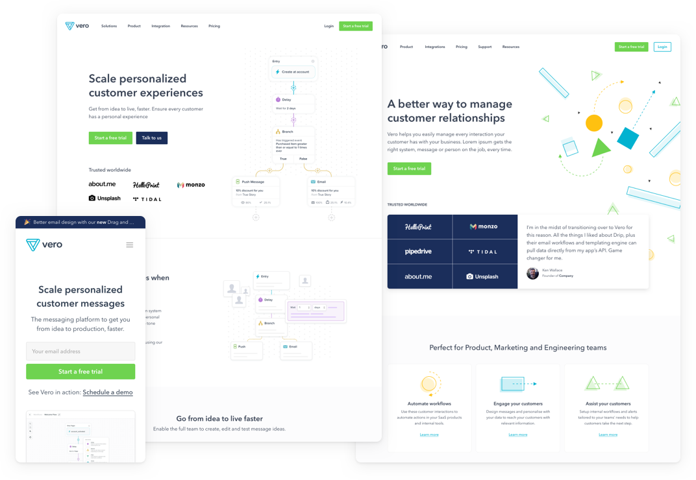
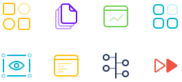
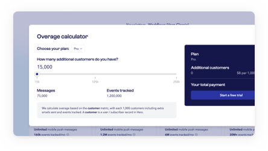

2018–present
Vero

From marketing pages and icongraphy to incremental UX/UI improvements to the marketing site, blog and help docs.



From marketing pages and icongraphy to incremental UX/UI improvements to the marketing site, blog and help docs.